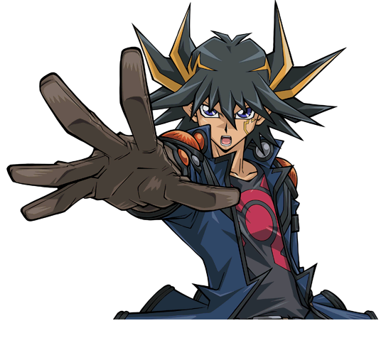

Yusei Fudo
Though calm and collected, no one can deny that a burning fire rages in Yusei's heart. Through his bond of friendship and his destiny as a Signer, Yusei has saved the world countless times. His Junk Deck focuses on low Level monsters, but he extracts their full potential thru Synchro Summoning. His go-to monster is the Signer Dragon "Stardust Dragon"
